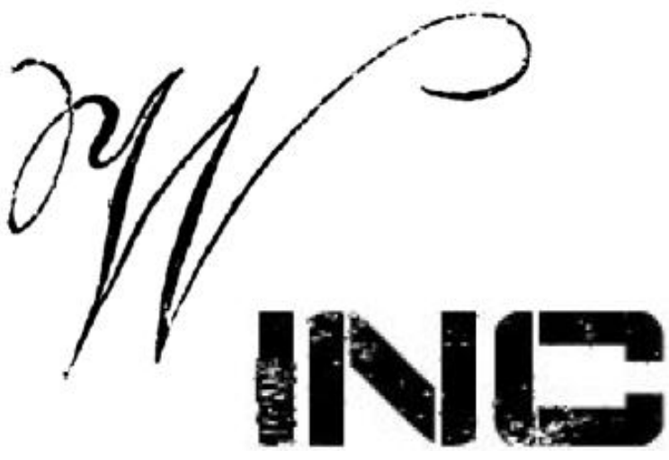

See the User Guide to get started using the app
We also provide API docs

About Widgets Inc.
The strategic mission of Widgets Inc. is to produce quality scientific and technological advancements for common, everyday use. We are dedicated to making sure that our innovators consider the end-user (customer, consumer, etc.) at all costs. While we are a Fortune 500 company (NASDAQ: WINK) aimed at making sure our investors receive high dividends, and for them to feel proud at the human-centered innovations that arise from our company.
Leadership
Our leadership team responds directly to our 30 member Board of Directors (who are made up of professionals from interdisciplinary fields beyond science and tech). The team is comprised of our CEO (Dr. Daniel Harmon), CFO (Dr. Robert Schrab), COO (Dr. Mundy Carter), CIO (Dr. Kurt Schuller), and CMO (Sean McKenna, J.D.). To accomplish our mission, our innovators act by these four tenants:
- Identify problems and possibilities related to humanistic endeavors important to our customer base.
- Utilize technical design best practices.
- Research issues thoroughly, ethically, analytically.
- Report information professionally.
History
Founded in Seattle, Washington in 1919, Widgets Inc. started out as Widget Tools LLC, known for making quality techno-science instruments. In 1956, then CEO Dr. Bo “Brains” Johnson bought several smaller communications and computation companies, expanding manufacturing and R&D. Thus, the name was changed to Widgets, Inc. While Seattle serves as the world headquarters, there are research labs in Columbia, Missouri; Tempe, Arizona; and Oshkosh, Wisconsin (where Widgets Inc. partners with Oshkosh Truck and, formerly, Oshkosh B’Gosh).